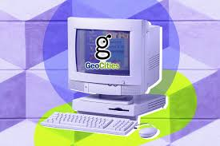

welcome.exe
> C:\> Iniciando Museo Digital de Internet...
> Cargando recuerdos nostálgicos...
> Bienvenid@ al viaje por la historia digital
> Este sitio es mejor visto con Internet Explorer 5.0+
> Resolución recomendada: 800x600
> Presiona cualquier tecla para continuar...

⏳ LÍNEA DEL TIEMPO DIGITAL
üñºÔ∏è EXPOSICIONES TEM√ÅTICAS
✦ Evolución del Diseño Web ✦
Primer sitio web
Tim Berners-Lee → Usaba HTML básico sin diseño.

GeoCities (1994)
El famoso servicio de hosting que organizaba sitios en "vecindarios" temáticos.
Netscape Navigator (1994)
El navegador que dominó los primeros años de la web.
Diseño con Tablas
Antes de CSS, las tablas eran la única forma de maquetar páginas web.
✦ Primeros Formatos Multimedia ✦

GIFs Animados
El formato que trajo animación a la web primitiva.

Música Retro
Las melodías que acompañaban muchos sitios web.

Adobe Flash
Revolucionó la web con animaciones e interactividad.